Inhalt Index DeskTop Bronstein

 Vektoranalysis und Feldtheorie Berechnung von Feldern Superposition von Feldern
Vektoranalysis und Feldtheorie Berechnung von Feldern Superposition von Feldern


In Analogie zur Überlagerung physikalischer Felder überlagern sich auch die Vektorfelder der Mathematik. Der Superpositionssatz lautet: Haben die Vektorfelder 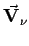 die Potentiale 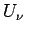, so hat das Vektorfeld 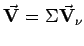 das Potential 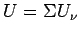.
Für n diskrete Quellpunkte mit den Ergiebigkeiten 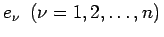, deren Felder sich überlagern, kann man daher das resultierende Feld durch algebraische Addition der Potentiale 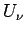 bestimmen:
| 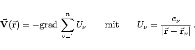 | (13.129a) |
Dabei ist  wieder der Ortsvektor des Aufpunktes, während 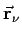 die Ortsvektoren der Quellpunkte sind.
wieder der Ortsvektor des Aufpunktes, während 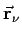 die Ortsvektoren der Quellpunkte sind.
Treten wirbelfreie Felder  und quellenfreie Felder 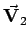 gemeinsam auf und handelt es sich dabei um überall stetige Felder, dann gilt:
und quellenfreie Felder 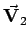 gemeinsam auf und handelt es sich dabei um überall stetige Felder, dann gilt:
| 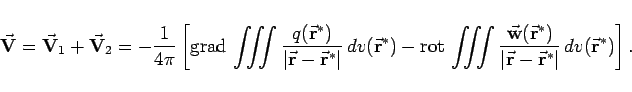 | (13.129b) |
Erstreckt sich das Vektorfeld ins Unendliche, dann ist die Bestimmung von  eindeutig, wenn
eindeutig, wenn  für 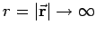 genügend stark verschwindet. Die Integration erfolgt über den gesamten Raum.
für 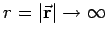 genügend stark verschwindet. Die Integration erfolgt über den gesamten Raum.